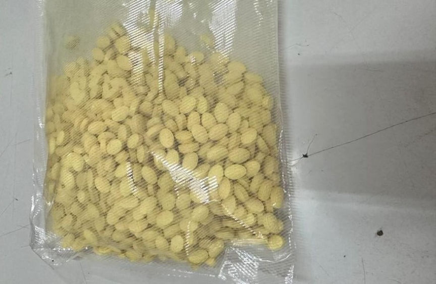
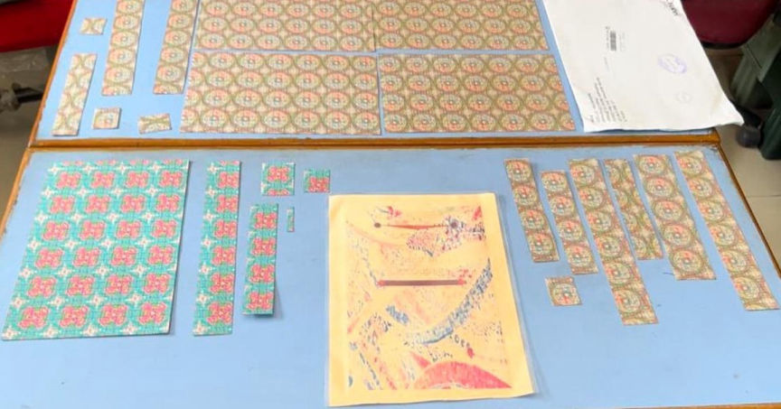
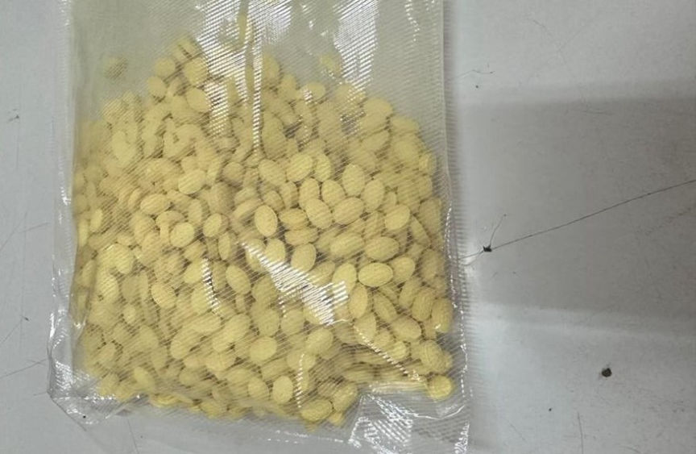
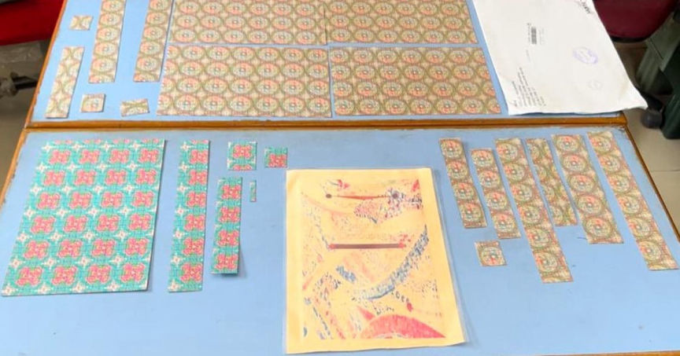

Indian Duo Arrested for Importing MDMA
Authorities in India arrested two men suspected of conspiring in the importation and resale of drugs purchased through the dark web.

The Special Intelligence and Investigation Branch (SIIB) of Mumbai Customs arrested the two men, Danish Shaikh and Samad Umatiya, following the interception and seizure of an incoming MDMA package shipped from the Netherlands.
The investigations were launched after SIIB officers were informed of a suspicious incoming package. On opening the package the officers allegedly found 245 tablets of MDMA, weighing approximately 120 grams and over 100 grams of a white semi-crystalline substance believed to be MDMA.
The officers seized the drugs and made a controlled delivery of a dummy package on June 8, 2023. The officers arrested Shaikh shortly after he accepted the delivery of the package. Umatiya was arrested following a similar delivery.
On being questioned, Umatiya told the officers that before his arrest he had successfully purchased and imported two drug packages. He also disclosed that he had ordered 400 grams of MDMA from a vendor based in the Netherlands and was waiting for the drug package to be shipped. The officers intercepted the package on June 12 and seized 1010 MDMA pills.
The duo was presented before a court and detained pending further investigations.
The duo's arrest follows the arrest of six suspects by India's Narcotics Control Bureau following the seizure of 15,000 LSD stamps, the largest LSD seizure in India.

The suspects run a drug trafficking operation through the dark web. They imported the drugs from the US, Poland, and the Netherlands. In addition to the LSD stamps, the suspect's arrests resulted in the seizure of 2.5 kilograms of cannabis.

MDMA pills seized from the suspects
The Special Intelligence and Investigation Branch (SIIB) of Mumbai Customs arrested the two men, Danish Shaikh and Samad Umatiya, following the interception and seizure of an incoming MDMA package shipped from the Netherlands.
The investigations were launched after SIIB officers were informed of a suspicious incoming package. On opening the package the officers allegedly found 245 tablets of MDMA, weighing approximately 120 grams and over 100 grams of a white semi-crystalline substance believed to be MDMA.
The officers seized the drugs and made a controlled delivery of a dummy package on June 8, 2023. The officers arrested Shaikh shortly after he accepted the delivery of the package. Umatiya was arrested following a similar delivery.
On being questioned, Umatiya told the officers that before his arrest he had successfully purchased and imported two drug packages. He also disclosed that he had ordered 400 grams of MDMA from a vendor based in the Netherlands and was waiting for the drug package to be shipped. The officers intercepted the package on June 12 and seized 1010 MDMA pills.
The duo was presented before a court and detained pending further investigations.
The duo's arrest follows the arrest of six suspects by India's Narcotics Control Bureau following the seizure of 15,000 LSD stamps, the largest LSD seizure in India.

The seized LSD
The suspects run a drug trafficking operation through the dark web. They imported the drugs from the US, Poland, and the Netherlands. In addition to the LSD stamps, the suspect's arrests resulted in the seizure of 2.5 kilograms of cannabis.